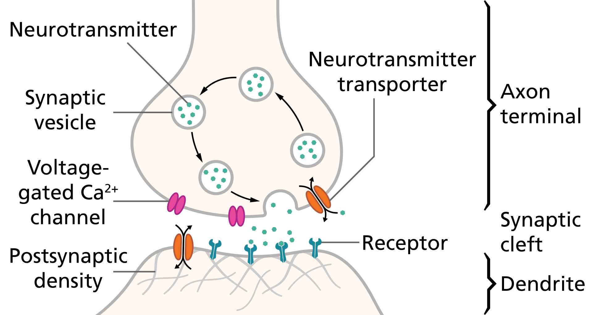

12_cell of sysNervous
name::
* McsEngl.cellSysNervous,
* McsEngl.sysNervous'12_cell!⇒cellSysNervous,
* McsEngl.sysNervous'att012-cell!⇒cellSysNervous,
* McsEngl.sysNervous'cell!⇒cellSysNervous,
description::
"Neurons are the primary components of the nervous system, along with the glial cells that give them structural and metabolic support."
[{2020-05-04} https://en.wikipedia.org/wiki/Neuron]
cellSysNervous.neuron-004
name::
* McsEngl.cellNeuron,
* McsEngl.cellNeuron'(human-neuron)!⇒cellNeuron,
* McsEngl.cell.004-neuron!⇒cellNeuron,
* McsEngl.cell.neuron-004!⇒cellNeuron,
* McsEngl.cellΒrain.neuron!⇒cellNeuron,
* McsEngl.cellSysNervous.neuron!⇒cellNeuron,
* McsEngl.nerve-cell!⇒cellNeuron,
* McsEngl.neuron!⇒cellNeuron,
* McsEngl.neuronHmn!⇒cellNeuron,
* McsEngl.neurone!⇒cellNeuron,
* McsEngl.neuroneHmn!⇒cellNeuron,
* McsEngl.sysNervous'att076-neuron!⇒cellNeuron,
* McsEngl.sysNervous'neuron!⇒cellNeuron,
====== langoChinese:
* McsZhon.shénjīngyuán-神经元-(神經元)!=cellNeuron,
* McsZhon.神经元-(神經元)-shénjīngyuán!=cellNeuron,
====== langoGreek:
* McsElln.κύτταρο.νευρικό!=cellNeuron,
* McsElln.νευρικό-κύτταρο!=cellNeuron,
* McsElln.νευρώνας!=cellNeuron,
description::
analytic: τελικός ορισμός ανάλυσης.
===
τα νευρικά κύτταρα είναι κύτταρα που επιτελούν την κύρια νευρική λειτουργία, παραγωγή και μεταβίβαση νευρικών ωσεων.
[Αργύρης, {1994}, 244⧺cptRsc31⧺]
===
Neuron:
These are the specialized, functional cells of the nervous-system that conduct neural information.
There were originally 2 basic hypotheses about the structure and function of the nervous-system (Kolb & Whishaw, 1985, p.317):
Neuron Hypothesis: the nervous-system is composed of discrete, autonomous cells, or units, that can interact but are not physically connected. Nerve Net Hypothesis: the nervous-system is composed of a continuous network of interconnected fibres. The current understanding of cognition in the brain represents a combination of these hypotheses. Cognition is viewed as occuring by the interaction between neurons through complex excitatory and inhibitory synapses.
As such, cognitive scientists should recognize the need to incorporate basic properties of neurons, and neural organization in the development of models of cognition.
The parallel distributed processing model, is a good example of a model that has attempted to account for the basic neural properties.
[U of A Cog Sci Dictionary]
===
synthetic: αρχικός ορισμός σύνθεσης.
===
μία από τις μικρότερες βιολογικές μοναδες.
generic-tree-of-cellNeuron::
* cell,
* McsEngl.cellNeuron:cell,
* neuronBio⧺cptEpistem1289⧺,
01_disease of cellNeuron
name::
* McsEngl.cellNeuron'01_disease,
* McsEngl.cellNeuron'att001-disease,
* McsEngl.cellNeuron'disease-att001,
* McsEngl.disease.254-cellNeuron,
* McsEngl.disease.cellNeuron-254,
Ελληνες ερευνητές
αποκωδικοποίησαν ασθένειες των νεύρων
της Ιωάννας Σωτήρχου
το κλειδί για την αντιμετώπιση μιας σειράς νευρολογικών διαταραχών, όπως είναι το αλτσχάιμερ, το πάρκινσον και η νόσος του χάντιγκτον, βρήκαν Ελληνες ερευνητές στο ιόνιο πανεπιστήμιο, έπειτα από έξι χρόνια ερευνών.
αυτό που δεν έχουν βρει ακόμη, όμως, είναι ο τρόπος να ξεκλειδώσουν το ενδιαφέρον της ελληνικής πολιτείας προκειμένου να αξιοποιηθεί κατάλληλα ένα μοναδικό ερευνητικό εργαλείο, το οποίο ανοίγει το δρόμο για την έγκαιρη διάγνωση αυτών των ασθενειών, αναζωπυρώνοντας τις ελπίδες για την αποτελεσματική θεραπεία τους.
ενώ μέχρι σήμερα οι κλινικές μελέτες εξετάζουν τις συνέπειες αυτών των διαταραχών, εστιάζοντας στα συμπτώματα ήδη ασθενών, η ερευνητική ομάδα πήρε τα πράγματα από την αρχή και με τη βοήθεια των μαθηματικών μοντέλων βιοπληροφορικής κατανόησε το μηχανισμό που τις προκαλεί, αγγίζοντας την καρδιά του προβλήματος.
οπως εξηγεί στην «ε» ο επίκουρος καθηγητής στο τμήμα πληροφορικής του ιονίου, παναγιώτης βλάμος: «οι νευρολογικές ασθένειες είναι ουσιαστικά διαταραχές στη λειτουργία των μιτοχονδρίων -των μονάδων παραγωγής ενέργειας του οργανισμού- που λειτουργούν με συγχωνεύσεις και διασπάσεις. Αιτία των δυσλειτουργιών στις συγχωνεύσεις των μιτοχονδρίων αποτελεί το φαινόμενο της ηλεκτρικής θρόμβωσης, που θεμελίωσε η ερευνητική μας ομάδα. Η ηλεκτρική θρόμβωση οδηγεί σε ηλεκτρικά σύμπλοκα στην εσωτερική μεμβράνη του μιτοχονδρίου, οπότε η υπεραγωγιμότητα της μεμβράνης διακόπτεται, οδηγώντας με τη σειρά της στη μείωση της παραγωγής ενέργειας. Μοντελοποιήσαμε τη λειτουργία συγχώνευσης και διάσπασης των μιτοχονδρίων σε επίπεδες τομές τους και προσομοιώσαμε σε υπολογιστή τη λειτουργία της εσωτερικής τους μεμβράνης. Ετσι καταλάβαμε ακριβώς τη λειτουργία τους. Οταν τελειώσαμε, ταυτοποιήσαμε το μηχανισμό με τα αποτελέσματα των κλινικών μελετών που ήδη υπήρχαν. Ειδικά στην περίπτωση του αλτσχάιμερ, ο πληθυσμός των υγιών μιτοχονδρίων μειώνεται κατά πολύ, οδηγώντας σε νευρωνική οξειδωτική βλάβη».
μία άμεση συνέπεια της ανακάλυψης είναι ότι τώρα μπορεί να γίνεται εντοπισμός και διάγνωση ακριβώς πάνω στη βλάβη αυτή, πολύ πιο έγκυρα και έγκαιρα απ' ό,τι πριν. Πέρα από τη διάγνωση και πρόληψη των νευρολογικών διαταραχών, όμως, ανοίγεται το πεδίο για τις κλινικές μελέτες που θα οδηγήσουν στην εξεύρεση της κατάλληλης αγωγής, στο σχεδιασμό ενδεδειγμένων φαρμάκων ή στη δημιουργία μιας εναλλακτικής θεραπείας.
η έρευνα, στην οποία συμμετείχαν επίσης ο θάνος αλεξίου, υποψήφιος διδάκτορας βιοπληροφορικής και ο γιάννης ρέκκας, ερευνητής φυσικών επιστημών, έχει ήδη γίνει αποδεκτή από τη διεθνή ερευνητική κοινότητα και έχει τύχει σημαντικών δημοσιεύσεων -στην εγκυρότερη βάση ιατρικών δεδομένων στον κόσμο Medworm, συμπεριλαμβάνεται ανάμεσα στα 20 περισσότερο διαβασμένα άρθρα σε ένα σύνολο 4.500 εργασιών για μιτοχονδριακές ασθένειες.
ένα τόσο σημαντικό εύρημα σε κάθε περίπτωση είναι κρίμα να μείνει στα χαρτιά. Το ερώτημα είναι αν η απρόθυμη μέχρι σήμερα πολιτεία θα διαθέσει τις εργαστηριακές υποδομές που απαιτούνται προκειμένου να εξελιχθεί η έρευνα και να αποφέρει απτά αποτελέσματα ή αν οι ερευνητές θα αναγκαστούν να αποδεχτούν κάποια από τις προτάσεις που τους έχουν γίνει από το εξωτερικό.
τη σπουδαιότητα ενός εργαλείου καταπολέμησης ασθενειών, οι οποίες αναμένεται να κάνουν θραύση στο μέλλον, ενώ το παρόν αδυνατεί να τις αντιμετωπίσει αποτελεσματικά, ο καθένας είναι σε θέση να το κατανοήσει. Ειδικά για το αλτσχάιμερ, από το οποίο πάσχουν 160.000 άνθρωποι στη χώρα μας, σχεδόν το 90% αυτών των ανθρώπων μένουν με τις οικογένειές τους, καθώς λείπουν οι δημόσιες δομές και η φροντίδα τους απασχολεί περισσότερους του ενός φροντιστές, σύμφωνα με στοιχεία ερευνών που διέθεσε στην «ε» η πρόεδρος της εταιρείας αλτσχάιμερ αθηνών, νευρολόγος ψυχίατρος παρασκευή σακκά. Αυτή η εκφυλιστική του εγκεφάλου ασθένεια υπολογίζεται ότι πλήττει περίπου 7.300.000 ανθρώπους στην ευρώπη, 35 εκατομμύρια σε όλον τον κόσμο, ενώ μέχρι το 2050 οι ασθενείς εκτιμάται ότι θα υπερτριπλασιαστούν.
[http://www.enet.gr/?i=news.el.episthmh-texnologia&id=319569 enet.gr, 08:25 παρασκευή 21 οκτωβρίου 2011]
02_soma of cellNeuron
name::
* McsEngl.cellNeuron'02_soma!⇒neuron'soma,
* McsEngl.cellNeuron'att003-soma!⇒neuron'soma,
* McsEngl.cellNeuron'soma-att003!⇒neuron'soma,
* McsEngl.cellNeuron'body!⇒neuron'soma,
* McsEngl.neuron'soma,
* McsEngl.soma-of-cellNeuron!⇒neuron'soma,
description::
"The soma (somas), perikaryon (pl. perikarya), neurocyton, or cell body is the bulbous, non-process portion of a neuron or other brain cell type, containing the cell nucleus. The word 'soma' comes from the Greek 'σῶμα', meaning 'body'. Although it is often used to refer to neurons, it can also refer to other cell types as well, including astrocytes,[1] oligodendrocytes,[2] and microglia.[3] There are many different specialized types of neurons, and their sizes vary from as small as about 5 micrometres to over 10 millimetre for some of the smallest and largest neurons of invertebrates, respectively.
The soma of a neuron (i.e., the main part of the neuron in which the dendrites branch off of) contains many organelles, including granules called Nissl granules, which are composed largely of rough endoplasmic reticulum and free polyribosomes.[4] The cell nucleus is a key feature of the soma. The nucleus is the source of most of the RNA that is produced in neurons. In general, most proteins are produced from mRNAs that do not travel far from the cell nucleus. This creates a challenge for supplying new proteins to axon endings that can be a meter or more away from the soma. Axons contain microtubule-associated motor proteins that transport protein-containing vesicles between the soma and the synapses at the axon terminals. Such transport of molecules towards and away from the soma maintains critical cell functions. In case of neurons, the soma receives a large number of inhibitory synapses [5], which can regulate the activity of these cells. It has also been shown, that microglial processes constantly monitor neuronal functions through somatic junctions, and exert neuroprotection when needed [6].
The axon hillock is a specialized domain of the neuronal cell body from which the axon originates. A high amount of protein synthesis occurs in this region, as it contains many Nissl granules (which are ribosomes wrapped in RER) and polyribosomes. Within the axon hillock, materials are sorted as either items that will enter the axon (like the components of the cytoskeletal architecture of the axon, mitochondria, etc.) or will remain in the soma. In addition, the axon hillock also has a specialized plasma membrane that contains large numbers of voltage-gated ion channels, since this is most often the site of action potential initiation.[4]
The survival of some sensory neurons depends on axon terminals making contact with sources of survival factors that prevent apoptosis. The survival factors are neurotrophic factors, including molecules such as nerve growth factor (NGF). NGF interacts with receptors at axon terminals, and this produces a signal that must be transported up the length of the axon to the nucleus. A current theory of how such survival signals are sent from axon endings to the soma includes the idea that NGF receptors are endocytosed from the surface of axon tips and that such endocytotic vesicles are transported up the axon.[7]"
[{2020-04-29} https://en.wikipedia.org/wiki/Soma_(biology)]
axon-hillock of neuron'soma
name::
* McsEngl.neuron'soma'axon-hillock,
* McsEngl.cellNeuron'att007-axon-hillock,
* McsEngl.cellNeuron'axon-hillock-att007,
description::
"The axon hillock is a specialized part of the cell body (or soma) of a neuron that connects to the axon. It can be identified using light microscopy from its appearance and location in a neuron and from its sparse distribution of Nissl substance.[1]
The axon hillock is the last site in the soma where membrane potentials propagated from synaptic inputs are summated before being transmitted to the axon.[2] For many years, it was believed that the axon hillock was the usual site of initiation of action potentials—the trigger zone. It is now thought that the earliest site of action potential initiation is at the initial segment: just between the peak of the axon hillock and the initial (unmyelinated) segment of the axon.[3] However, the positive point, at which the action potential starts, varies between cells.[citation needed] It can also be altered by hormonal stimulation of the neuron, or by second messenger effects of neurotransmitters.[citation needed]
The axon hillock also delineates separate membrane domains between the cell body and axon. [4] This allows for localization of membrane proteins to either the axonal or somal side of the cell."
[{2020-04-29} https://en.wikipedia.org/wiki/Axon_hillock]
03_neurite of cellNeuron
descriptionShort::
· any projection either axon or dendrite.
name::
* McsEngl.cellNeuron'03_neurite!⇒neuron'neurite,
* McsEngl.cellNeuron'att004-neurite!⇒neuron'neurite,
* McsEngl.cellNeuron'neurite-att004!⇒neuron'neurite,
* McsEngl.neurite-of-neuron!⇒neuron'neurite,
* McsEngl.neuron'neurite,
====== langoGreek:
* McsElln.αποφυάδα-νευρικού-κυττάρου!=neuron'neurite,
description::
"A neurite or neuronal process refers to any projection from the cell body of a neuron. This projection can be either an axon or a dendrite. The term is frequently used when speaking of immature or developing neurons, especially of cells in culture, because it can be difficult to tell axons from dendrites before differentiation is complete.[1]"
[{2020-04-29} https://en.wikipedia.org/wiki/Neurite]
===
analytic: αποφυαδες είναι οι απολύξεις του νευρικού-κυττάρου.
[hmnSngo, {1995-03}]
whole-tree-of-neuron'neurite::
* cellNeuron,
* McsEngl.neurite//cellNeuron,
neurite.SPECIFIC
04_axon of cellNeuron
description::
"An axon (from Greek ἄξων áxōn, axis), or nerve fiber (or nerve fibre: see spelling differences), is a long, slender projection of a nerve cell, or neuron, in vertebrates, that typically conducts electrical impulses known as action potentials away from the nerve cell body. The function of the axon is to transmit information to different neurons, muscles, and glands."
[{2023-04-15 retrieved} https://en.wikipedia.org/wiki/Axon]
name::
* McsEngl.axon-of-neuron!⇒neuron'axon,
* McsEngl.cellNeuron'04_axon!⇒neuron'axon,
* McsEngl.cellNeuron'att005-axon!⇒neuron'axon,
* McsEngl.cellNeuron'axon-att005!⇒neuron'axon,
* McsEngl.neuron'axon,
* McsEngl.neuron'neurite.axon!⇒neuron'axon,
* McsEngl.nerve-fiber!⇒neuron'axon,
====== langoGreek:
* McsElln.άξονας-νευρώνα!-ο!=neuron'axon,
* McsElln.νευράξονας!-ο!=neuron'axon,
* McsElln.νευρική-ίνα!-η!=neuron'axon,
* McsElln.νευρίτης!=neuron'axon,
descriptionLong::
νευρική-ίνα είναι η πιο μακριά αποφυάδα του νευρικού-κυττάρου.
[hmnSngo, {1995-03}]
τα νευρικά κύτταρα αποτελούνται από το κυτταρικο σώμα, που φέρνει τον πυρήνα και το κυτταρόπλασμα, και τις αποφυαδες. Η πιο μακριά αποφυάδα λέγεται νευρίτης ή νευρική ίνα, ενώ όλες οι άλλες, πιο κοντές, αποτελούν τους δενδρίτες.
[Αργύρης, {1994}, 84⧺cptRsc29⧺]
WHOLE:
* cellNeuron,
OPERATION⧺cptEpistem475.2⧺:
νευρική ωση/ώθηση είναι η κυματοειδής επέκταση της νευρικής διέγερσης κατά μήκος της νευρικής ίνας.
[Αργύρης, {1994}, 148⧺cptRsc29⧺]
SPECIFIC:
τις νευρικές ίνες ανάλογα με τη λειτουργία τους τις χωρίζουμε σε κινητικες, αισθητικες και συνδετικες.
[Αργύρης, {1994}, 245⧺cptRsc31⧺]
telodendron of neuron'axon
name::
* McsEngl.neuron'axon'telodendron,
* McsEngl.telodendron-of-axon,
description::
"An axon can divide into many branches called telodendria (Greek–end of tree). At the end of each telodendron is an axon terminal (also called a synaptic bouton, or terminal bouton). Axon terminals contain synaptic vesicles that store the neurotransmitter for release at the synapse. This makes multiple synaptic connections with other neurons possible. Sometimes the axon of a neuron may synapse onto dendrites of the same neuron, when it is known as an autapse."
[{2020-04-29} https://en.wikipedia.org/wiki/Axon#Axon_terminals]
terminal of neuron'axon
name::
* McsEngl.neuron'axon'terminal,
* McsEngl.axon'terminal,
description::
"Axon terminals (also called synaptic boutons or terminal boutons) are distal terminations of the telodendria (branches) of an axon. An axon, also called a nerve fiber, is a long, slender projection of a nerve cell, or neuron, that conducts electrical impulses called action potentials away from the neuron's cell body, or soma, in order to transmit those impulses to other neurons, muscle cells or glands.
Neurons are interconnected in complex arrangements, and use electrochemical signals and neurotransmitter chemicals to transmit impulses from one neuron to the next; axon terminals are separated from neighboring neurons by a small gap called a synapse, across which impulses are sent. The axon terminal, and the neuron from which it comes, is sometimes referred to as the "presynaptic" neuron."
[{2020-04-29} https://en.wikipedia.org/wiki/Axon_terminal]
synaptic-vesicle of neuron'axon
name::
* McsEngl.neuron'axon'synaptic-vesicle,
* McsEngl.synaptic-vesicle,
description::
"In a neuron, synaptic vesicles (or neurotransmitter vesicles) store various neurotransmitters that are released at the synapse. The release is regulated by a voltage-dependent calcium channel. Vesicles are essential for propagating nerve impulses between neurons and are constantly recreated by the cell. The area in the axon that holds groups of vesicles is an axon terminal or "terminal bouton". Up to 130 vesicles can be released per bouton over a ten-minute period of stimulation at 0.2 Hz.[1] In the visual cortex of the human brain, synaptic vesicles have an average diameter of 39.5 nanometers (nm) with a standard deviation of 5.1 nm.[2]"
[{2020-05-01} https://en.wikipedia.org/wiki/Synaptic_vesicle]
neurotransmitter of neuron'axon
name::
* McsEngl.neuron'axon'neurotransmitter,
* McsEngl.axon'neurotransmitter,
* McsEngl.neurotransmitter-of-neron'axon,
====== langoGreek:
* McsElln.νευροδιαβιβαστής!=neurotransmitter,
description::
"Neurotransmitters are endogenous chemicals that enable neurotransmission. They are a type of chemical messenger which transmits signals across a chemical synapse from one neuron (nerve cell) to another 'target' neuron, muscle cell, or gland cell.[1] Neurotransmitters are released from synaptic vesicles in synapses into the synaptic cleft, where they are received by neurotransmitter receptors on the target cell. Many neurotransmitters are synthesized from simple and plentiful precursors such as amino acids, which are readily available and only require a small number of biosynthetic steps for conversion. Neurotransmitters are essential to the function of complex neural systems. The exact number of unique neurotransmitters in humans is unknown, but more than 200 have been identified.[2][3][4]"
[{2020-05-01} https://en.wikipedia.org/wiki/Neurotransmitter]
generic-tree-of-neurotransmitter::
* signaling-molecule-of-cell,
neurotransmitter-receptor of neuron'axon
name::
* McsEngl.neuron'axon'neurotransmitter-receptor,
* McsEngl.neurotransmitter-receptor,
description::
"A neurotransmitter receptor (also known as a neuroreceptor) is a membrane receptor protein[1] that is activated by a neurotransmitter.[2] Chemicals on the outside of the cell, such as a neurotransmitter, can bump into the cell's membrane and along the membrane we can find receptors. If a neurotransmitter bumps into its corresponding receptor, they will bind and can trigger other events to occur inside the cell. Therefore, a membrane receptor is part of the molecular machinery that allows cells to communicate with one another. A neurotransmitter receptor is a class of receptors that specifically binds with neurotransmitters as opposed to other molecules.
In postsynaptic cells, neurotransmitter receptors receive signals that trigger an electrical signal, by regulating the activity of ion channels. The influx of ions through ion channels opened due to the binding of neurotransmitters to specific receptors can change the membrane potential of a neuron. This can result in a signal that runs along the axon (see action potential) and is passed along at a synapse to another neuron and possibly on to a neural network.[1] On presynaptic cells, there can be receptor sites specific to the neurotransmitters released by that cell (see Autoreceptor), which provide feedback and mediate excessive neurotransmitter release from it.[3]
There are two major types of neurotransmitter receptors: ionotropic and metabotropic. Ionotropic means that ions can pass through the receptor, whereas metabotropic means that a second messenger inside the cell relays the message (i.e. metabotropic receptors do not have channels). Metabotropic receptors are in fact G protein-coupled receptors.[2][4] Ionotropic receptors are also called Ligand-gated ion channels and they can be excited by neurotransmitters (ligands) like glutamate and aspartate. These receptors can also be inhibited by neurotransmitters like GABA and glycine. Conversely, G-protein-coupled receptors are neither excitatory nor inhibitory. Rather, they can have a broad number of functions such as modulating the actions of excitatory and inhibitory ion channels or triggering a signalling cascade that releases calcium from stores inside the cell.[2] Most neurotransmitters receptors are G-protein coupled.[1]"
[{2020-05-01} https://en.wikipedia.org/wiki/Neurotransmitter_receptor]
size of neuron'axon
name::
* McsEngl.neuron'axon'size,
description::
"The axon leaves the soma at a swelling called the axon hillock, and travels for as far as 1 meter in humans or more in other species."
[{2020-04-29} https://en.wikipedia.org/wiki/Neuron]
neuron'axon.SPECIFIC
description::
"Nerve fibers are classed into three types – group A nerve fibers, group B nerve fibers, and group C nerve fibers. Groups A and B are myelinated, and group C are unmyelinated. These groups include both sensory fibers and motor fibers. Another classification groups only the sensory fibers as Type I, Type II, Type III, and Type IV."
[{2023-04-15 retrieved} https://en.wikipedia.org/wiki/Axon]
05_dendrite of cellNeuron
name::
* McsEngl.cellNeuron'05_dendrite!⇒dendriteHmn,
* McsEngl.cellNeuron'att006-dendrite!⇒dendriteHmn,
* McsEngl.cellNeuron'dendrite-att006!⇒dendriteHmn,
* McsEngl.neuron'neurite.dendrite!⇒dendriteHmn,
* McsEngl.dendriteHmn,
* McsEngl.dendrite-of-cellNeuron!⇒dendriteHmn,
* McsEngl.neuron'dendrite,
====== langoGreek:
* McsElln.δενδρίτης!=dendriteHmn,
description::
"Dendrites (from Greek δένδρον déndron, "tree"), also dendrons, are branched protoplasmic extensions of a nerve cell that propagate the electrochemical stimulation received from other neural cells to the cell body, or soma, of the neuron from which the dendrites project. Electrical stimulation is transmitted onto dendrites by upstream neurons (usually via their axons) via synapses which are located at various points throughout the dendritic tree. Dendrites play a critical role in integrating these synaptic inputs and in determining the extent to which action potentials are produced by the neuron.[1] Dendritic arborization, also known as dendritic branching, is a multi-step biological process by which neurons form new dendritic trees and branches to create new synapses.[1] The morphology of dendrites such as branch density and grouping patterns are highly correlated to the function of the neuron. Malformation of dendrites is also tightly correlated to impaired nervous system function.[2] Some disorders that are associated with the malformation of dendrites are autism, depression, schizophrenia, Down syndrome and anxiety.
Certain classes of dendrites contain small projections referred to as dendritic spines that increase receptive properties of dendrites to isolate signal specificity. Increased neural activity and the establishment of long-term potentiation at dendritic spines change the sizes, shape, and conduction. This ability for dendritic growth is thought to play a role in learning and memory formation. There can be as many as 15,000 spines per cell, each of which serves as a postsynaptic process for individual presynaptic axons.[3] Dendritic branching can be extensive and in some cases is sufficient to receive as many as 100,000 inputs to a single neuron.[4]
Dendrites are one of two types of protoplasmic protrusions that extrude from the cell body of a neuron, the other type being an axon. Axons can be distinguished from dendrites by several features including shape, length, and function. Dendrites often taper off in shape and are shorter, while axons tend to maintain a constant radius and be relatively long. Typically, axons transmit electrochemical signals and dendrites receive the electrochemical signals, although some types of neurons in certain species lack axons and simply transmit signals via their dendrites.[5] Dendrites provide an enlarged surface area to receive signals from the terminal buttons of other axons, and the axon also commonly divides at its far end into many branches (telodendria) each of which ends in a nerve terminal, allowing a chemical signal to pass simultaneously to many target cells.[4] Typically, when an electrochemical signal stimulates a neuron, it occurs at a dendrite and causes changes in the electrical potential across the neuron's plasma membrane. This change in the membrane potential will passively spread across the dendrite but becomes weaker with distance without an action potential. An action potential propagates the electrical activity along the membrane of the neuron's dendrites to the cell body and then afferently down the length of the axon to the axon terminal, where it triggers the release of neurotransmitters into the synaptic cleft.[4] However, synapses involving dendrites can also be axodendritic, involving an axon signaling to a dendrite, or dendrodendritic, involving signaling between dendrites.[6] An autapse is a synapse in which the axon of one neuron transmits signals to its own dendrites.
There are three main types of neurons; multipolar, bipolar, and unipolar. Multipolar neurons, such as the one shown in the image, are composed of one axon and many dendritic trees. Pyramidal cells are multipolar cortical neurons with pyramid shaped cell bodies and large dendrites called apical dendrites that extend to the surface of the cortex. Bipolar neurons have one axon and one dendritic tree at opposing ends of the cell body. Unipolar neurons have a stalk that extends from the cell body that separates into two branches with one containing the dendrites and the other with the terminal buttons. Unipolar dendrites are used to detect sensory stimuli such as touch or temperature.[6][7][8]"
[{2020-04-29} https://en.wikipedia.org/wiki/Dendrite]
===
Each nerve cell consists of a central portion containing the nucleus, known as the cell body, and one or more structures referred to as axons and dendrites. The dendrites are rather short extensions of the cell body and are involved in the reception of stimuli. The axon, by contrast, is usually a single elongated extension; it is especially important in the transmission of nerve impulses from the region of the cell body to other cells.
"Nervous System," Microsoft(R) Encarta(R) 97 Encyclopedia. (c) 1993-1996 Microsoft Corporation. All rights reserved.
spine of dendriteHmn
name::
* McsEngl.dendriteHmn'spine,
* McsEngl.spine-of-dendriteHmn,
description::
"A dendritic spine (or spine) is a small membranous protrusion from a neuron's dendrite that typically receives input from a single axon at the synapse. Dendritic spines serve as a storage site for synaptic strength and help transmit electrical signals to the neuron's cell body. Most spines have a bulbous head (the spine head), and a thin neck that connects the head of the spine to the shaft of the dendrite. The dendrites of a single neuron can contain hundreds to thousands of spines. In addition to spines providing an anatomical substrate for memory storage and synaptic transmission, they may also serve to increase the number of possible contacts between neurons.[1]"
[{2020-05-04} https://en.wikipedia.org/wiki/Dendritic_spine]
06_synapse of cellNeuron
name::
* McsEngl.cellNeuron'06_synapse!⇒synapseHmn,
* McsEngl.cellNeuron'att002-synapse!⇒synapseHmn,
* McsEngl.cellNeuron'synapse-att002!⇒synapseHmn,
* McsEngl.synapseHmn,
* McsEngl.neural-synapse!⇒synapseHmn,
* McsEngl.neuron'synapse!⇒synapseHmn,
* McsEngl.synapse-of-cellNeuron!⇒synapseHmn, /sá-i-náps/,
====== langoGreek:
* McsElln.σύναψη-νευρικών-κυττάρων!=synapseHmn,
* McsElln.σύναψη!=synapseHmn,
description::

analytic: σύναψη νευρικού κυττάρου είναι η σύνδεση της νευρικής-του-ινας με άλλο νευρικό κύτταρο ή εκτελεστικό όργανο.
[hmnSngo, {1995-03}]
===
κάθε νευρώνας με τα τελικά του κομβία μπορεί να έρχεται σε λειτουργικη συνδεση με
- τους δενδρίτες,
- τα κυτταρικά σώματα ή και
- τους νευρίτες άλλων κυττάρων, καθώς και
- με ειδικά διαμορφωμένες θέσεις των εκτελεστικών οργάνων. Η θέση της λειτουργικής αυτης σύνδεσης μέσω της οποίας μεταβιβάζεται η νευρική ώση, λέγεται σύναψη.
[Αργύρης, {1994}, 246⧺cptRsc31⧺]
===
τα σημεία συνδέσεως των νευρικών κυττάρων λέγονται συναψεις. Οι συνάψεις γίνονται ανάμεσα στις απολήξεις της νευρικής ίνας και το σώμα ή τους δενδρίτες του άλλου κυττάρου.
[Αργύρης, {1994}, 84⧺cptRsc29⧺]
whole-tree-of-synapseHmn::
* cellNeuron,
* McsEngl.synapseHmn//cellNeuron,
connection of synapseHmn
name::
* McsEngl.synapseHmn'connection,
description::
"At the majority of synapses, signals cross from the axon of one neuron to a dendrite of another. However, synapses can connect an axon to another axon or a dendrite to another dendrite."
[{2020-05-01} https://en.wikipedia.org/wiki/Neuron]
DOING of synapseHmn
name::
* McsEngl.synapseHmn'doing,
doing::
η μεταβίβαση της νευρικής ώσης μέσω των συνάψεων γίνεται με τη βοήθεια διαβιβαστικών ουσιών, των νευροδιαβιβαστών, και σε δύο στάδια.
επειδή οι νευροδιαβιβαστικές ουσίες υπάρχουν μόνο στις απολήξεις των νευριτών, η μεταβίβαση μιας νευρικής ώσης γινεται μόνο προς μία κατευθυνση, δηλαδή από το νευρίτη προς το μετασυναπτικό νευρώνα και όχι αντίθετα.
[Αργύρης, {1994}, 246⧺cptRsc31⧺]
number of cellNeuron
description::
"The number of neurons in the brain varies dramatically from species to species.[55] In a human, there are an estimated 10–20 billion neurons in the cerebral cortex and 55–70 billion neurons in the cerebellum.[56] By contrast, the nematode worm Caenorhabditis elegans has just 302 neurons, making it an ideal model organism as scientists have been able to map all of its neurons. The fruit fly Drosophila melanogaster, a common subject in biological experiments, has around 100,000 neurons and exhibits many complex behaviors. Many properties of neurons, from the type of neurotransmitters used to ion channel composition, are maintained across species, allowing scientists to study processes occurring in more complex organisms in much simpler experimental systems."
[{2023-04-07 retrieved} https://en.wikipedia.org/wiki/Neuron#Neurons_in_the_brain]
info-resource of cellNeuron
structure of cellNeuron
name::
* McsEngl.cellNeuron'structure,
structure::
* soma,
* neurite,
** axon,
** dendrite,
* synapse,
* δυναμικο ηρεμιας,
* σώμα,
κυτταρόπλασμα
πυρήνας
Each nerve cell consists of a central portion containing the nucleus, known as the cell body, and one or more structures referred to as axons and dendrites. The dendrites are rather short extensions of the cell body and are involved in the reception of stimuli. The axon, by contrast, is usually a single elongated extension; it is especially important in the transmission of nerve impulses from the region of the cell body to other cells.
"Nervous System," Microsoft(R) Encarta(R) 97 Encyclopedia. (c) 1993-1996 Microsoft Corporation. All rights reserved.
αποτελούνται από το κυτταρικο σώμα, που φέρνει τον πυρήνα και το κυτταρόπλασμα, και τις αποφυαδες. Η πιο μακριά αποφυάδα λέγεται νευρίτης ή νευρική ίνα, ενώ όλες οι άλλες, πιο κοντές, αποτελούν τους δενδρίτες.
[Αργύρης, {1994}, 84⧺cptRsc29⧺]
δυναμικο ηρεμιας:
οταν ένα νευρικό κύτταρο βρίσκεται σε ηρεμία -δεν επιδρά επάνω του κάποιο ερέθισμα- η κυτταρική του μεμβράνη εμφανίζει διαφορά δυναμικού, δυναμικο ηρεμιας, μεταξύ της εξωτερικής και της εσωτερικής επιφάνειας. Η εξωτερική επιφάνεια είναι ηλεκτροθετικότερη της εσωτερικής κατά 60 mV περίπου.
[Αργύρης, {1994}, 245⧺cptRsc31⧺]
DOING of cellNeuron
name::
* McsEngl.cellNeuron'doing,
doing::
τα νευρικά κύτταρα είναι εξειδικευμένα να
- δέχονται τα ερεθίσματα από το περιβάλλον, να τα
- μεταβιβάζουν στον εγκέφαλο, ο οποίος τα επεξεργάζεται, και να
- φερνουν στη συνέχεια τις εντολές στους μυς.
[Αργύρης, {1994}, 9⧺cptRsc29⧺]
τα κύτταρα του νευρικού-συστήματος μεταφέρουν με μεγάλη ταχύτητα ηλεκτρικά-σήματα τα οποία κωδικοποιούν πληροφορίες ή εντολές προς και από συγκεκριμένα σημεία του σώματος.
[RAM, επιστημη 21ος αιωνας, νοηση, δεκέμβριος 2002, 12]
nervous-stimulation of cellNeuron
description::
"Nervous stimulation refers to the process by which the nervous system sends signals to different parts of the body in order to control and coordinate their functions. This process involves the transmission of electrical impulses or signals through nerve cells, or neurons, which are specialized cells that are responsible for transmitting information throughout the body."
[{2023-04-15 retrieved} https://chat.openai.com/]
name::
* McsEngl.cellNeuron'att010-nervous-stimulation,
* McsEngl.cellNeuron'nervous-stimulation,
* McsEngl.nevrostimulation,
* McsEngl.nervous-stimulation,
====== langoGreek:
* McsElln.νευρική-διέγερση,
descriptionLong::
"Nervous stimulation refers to the process by which the nervous system sends signals to different parts of the body in order to control and coordinate their functions. This process involves the transmission of electrical impulses or signals through nerve cells, or neurons, which are specialized cells that are responsible for transmitting information throughout the body.
There are two main types of nervous stimulation: sensory and motor. Sensory stimulation occurs when sensory neurons detect changes in the environment or in the body and send signals to the central nervous system (CNS) for processing. This allows the brain to receive information about the environment and the body's internal state.
Motor stimulation occurs when motor neurons in the CNS send signals to muscles and glands, causing them to contract or secrete substances. This allows the body to move, respond to stimuli, and regulate internal processes such as digestion and metabolism.
Nervous stimulation is a complex process that involves the coordinated activity of many different neurons and other cells in the nervous system. Dysfunction in nervous stimulation can lead to a variety of disorders and conditions, including neurological diseases, sensory deficits, and movement disorders."
[{2023-04-15 retrieved} https://chat.openai.com/]
οι μεταβολές που γίνονται γύρω μας είναι μεταβολές στην ενέργεια που περιέχουν και μεταβιβάζουν τα σώματα. Τα νευρικά κύτταρα επηρεάζονται από τις μεταβολές αυτές (ερεθίσματα) στα σημεία που επιδρούν, όπου και διαταράσσεται η ηλεκτρική τους κατάσταση. Αυτή η διατάραξη λέγεται νευρική διέγερση.
η νευρική διέγερση δε μένει στάσιμη στο σημειο που γίνεται το ερέθισμα, αλλά μεταβιβάζεται κατά μήκος του νεύρου σαν ένα κύμα, τη νευρική ώθηση (ωση).
νευρικές διεγέρσεις μπορεί να προκληθούν είτε από εξωτερικά ερεθίσματα είτε από εντολές του εγκεφάλου.
[Αργύρης, {1994}, 85⧺cptRsc29⧺]
nerve-impulse of cellNeuron
description::
"A nerve impulse, also known as an action potential, is a rapid, transient electrical signal that travels along a nerve cell (neuron) or a group of neurons. It is a key mechanism by which the nervous system transmits information from one part of the body to another.
[{2023-04-15 retrieved} https://chat.openai.com/]
name::
* McsEngl.action-potential-of-neurons,
* McsEngl.cellNeuron'att008-nerve-impulse,
* McsEngl.cellNeuron'nerve-impulse-att008,
* McsEngl.cellNeuron'action-potential,
* McsEngl.electrical-impulse-of-neurons,
* McsEngl.nerve-impulse-of-neurons,
* McsEngl.spike-of-neurons,
====== langoGreek:
* McsElln.νευρική-ώθηση,
descriptionLong::

===
"A nerve impulse, also known as an action potential, is a rapid, transient electrical signal that travels along a nerve cell (neuron) or a group of neurons. It is a key mechanism by which the nervous system transmits information from one part of the body to another.
Nerve impulses are generated when there is a change in the electrical charge across the cell membrane of a neuron. Normally, the inside of the neuron is negatively charged relative to the outside. When a stimulus such as a touch, sound or light is detected, it causes channels in the membrane of the neuron to open and allow positively charged ions, such as sodium ions, to flow into the cell. This causes a change in the electrical potential across the membrane, creating a temporary depolarization of the neuron.
If the depolarization reaches a certain threshold, it triggers an action potential, which is a rapid and brief reversal of the charge across the membrane, resulting in a wave of depolarization that moves down the length of the neuron. This wave of depolarization is the nerve impulse, which can travel at speeds up to 120 meters per second in some neurons.
Nerve impulses are essential for a wide range of physiological processes, including sensory perception, movement, and communication between different parts of the body. The ability of the nervous system to generate and propagate nerve impulses is critical for normal brain function and is often the target of drugs used to treat neurological disorders."
[{2023-04-15 retrieved} https://chat.openai.com/]
===
"In physiology, an action potential occurs when the membrane potential of a specific cell location rapidly rises and falls:[1] this depolarization then causes adjacent locations to similarly depolarize. Action potentials occur in several types of animal cells, called excitable cells, which include neurons, muscle cells, endocrine cells, glomus cells, and in some plant cells.
In neurons, action potentials play a central role in cell-to-cell communication by providing for—or with regard to saltatory conduction, assisting—the propagation of signals along the neuron's axon toward synaptic boutons situated at the ends of an axon; these signals can then connect with other neurons at synapses, or to motor cells or glands. In other types of cells, their main function is to activate intracellular processes. In muscle cells, for example, an action potential is the first step in the chain of events leading to contraction. In beta cells of the pancreas, they provoke release of insulin.[a] Action potentials in neurons are also known as "nerve impulses" or "spikes", and the temporal sequence of action potentials generated by a neuron is called its "spike train". A neuron that emits an action potential, or nerve impulse, is often said to "fire".
Action potentials are generated by special types of voltage-gated ion channels embedded in a cell's plasma membrane.[b] These channels are shut when the membrane potential is near the (negative) resting potential of the cell, but they rapidly begin to open if the membrane potential increases to a precisely defined threshold voltage, depolarising the transmembrane potential.[b] When the channels open, they allow an inward flow of sodium ions, which changes the electrochemical gradient, which in turn produces a further rise in the membrane potential. This then causes more channels to open, producing a greater electric current across the cell membrane and so on. The process proceeds explosively until all of the available ion channels are open, resulting in a large upswing in the membrane potential. The rapid influx of sodium ions causes the polarity of the plasma membrane to reverse, and the ion channels then rapidly inactivate. As the sodium channels close, sodium ions can no longer enter the neuron, and they are then actively transported back out of the plasma membrane. Potassium channels are then activated, and there is an outward current of potassium ions, returning the electrochemical gradient to the resting state. After an action potential has occurred, there is a transient negative shift, called the afterhyperpolarization.
In animal cells, there are two primary types of action potentials. One type is generated by voltage-gated sodium channels, the other by voltage-gated calcium channels. Sodium-based action potentials usually last for under one millisecond, but calcium-based action potentials may last for 100 milliseconds or longer.[2] In some types of neurons, slow calcium spikes provide the driving force for a long burst of rapidly emitted sodium spikes. In cardiac muscle cells, on the other hand, an initial fast sodium spike provides a "primer" to provoke the rapid onset of a calcium spike, which then produces muscle contraction.[2]"
[{2020-05-01} https://en.wikipedia.org/wiki/Action_potential]
===
νευρική διέγερση είναι η μεταβολή της ηλεκτρικής κατάστασης στα νευρικά κύτταρα.
[Αργύρης, {1994}, 147⧺cptRsc29⧺]
neurogenesis of cellNeuron
name::
* McsEngl.cellNeuron'att009-neurogenesis,
* McsEngl.cellNeuron'neurogenesis-att009,
* McsEngl.neurogenesis,
description::
"In most cases, neurons are generated by neural stem cells during brain development and childhood. Neurogenesis largely ceases during adulthood in most areas of the brain. However, strong evidence supports generation of substantial numbers of new neurons in the hippocampus and olfactory bulb."
[{2020-05-03} https://en.wikipedia.org/wiki/Neuron]
"Neurogenesis is the process by which nervous system cells, the neurons, are produced by neural stem cells (NSC)s. It occurs in all species of animals except the porifera (sponges) and placozoans.[1] Types of NSCs include neuroepithelial cells (NECs), radial glial cells (RGCs), basal progenitors (BPs), intermediate neuronal precursors (INP)s, subventricular zone astrocytes, and subgranular zone radial astrocytes, among others.[1] Neurogenesis is most active during embryonic development and is responsible for producing all the various types of neurons of the organism, but continues throughout adult life in a variety of organisms.[1] Once born, neurons do not divide (see mitosis), and many will live the lifespan of the animal.[2]"
[{2020-05-01} https://en.wikipedia.org/wiki/Neurogenesis]
===
τα νευρικά κύτταρα, λόγω της μεγάλης εξειδίκευσής τους, έχουν χάσει την ικανότητα να πολλαπλασιάζονται, με όσα γεννηθήκαμε, αυτά ή και λιγότερα παραμένουν μέχρι το θάνατό μας.
[Αργύρης, {1994}, 244⧺cptRsc31⧺]
neurotransmission of cellNeuron
description::
"Neurotransmission (Latin: transmissio "passage, crossing" from transmittere "send, let through") is the process by which signaling molecules called neurotransmitters are released by the axon terminal of a neuron (the presynaptic neuron), and bind to and react with the receptors on the dendrites of another neuron (the postsynaptic neuron) a short distance away. A similar process occurs in retrograde neurotransmission, where the dendrites of the postsynaptic neuron release retrograde neurotransmitters (e.g., endocannabinoids; synthesized in response to a rise in intracellular calcium levels) that signal through receptors that are located on the axon terminal of the presynaptic neuron, mainly at GABAergic and glutamatergic synapses.[1][2][3][4]"
[{2023-04-15 retrieved} https://en.wikipedia.org/wiki/Neurotransmission]
name::
* McsEngl.cellNeuron'att011-neurotransmission,
* McsEngl.cellNeuron'neurotransmission,
* McsEngl.neurotransmission,
WHOLE-PART-TREE of cellNeuron
name::
* McsEngl.cellNeuron'whole-part-tree,
whole-tree-of-cellNeuron::
* neural-tissue,
* McsEngl.cellNeuron//tissueNeural,
===
"In vertebrates, the majority of neurons belong to the central nervous system, but some reside in peripheral ganglia, and many sensory neurons are situated in sensory organs such as the retina and cochlea."
[{2020-05-04} https://en.wikipedia.org/wiki/Neuron]
cellNeuron.SPECIFIC
description::
on their function: sensory neurons, motor neurons, and interneurons4. A typical neuron consists of a cell body (soma), dendrites, and a single axon
ανάλογα με την κατεύθυνση της πληροφορίας, σε σχέση με το κεντρικό νευρικό-σύστημα, που μεταδίδουν, οι νευρώνες χωρίζονται σε
- προαγωγούς ή αισθητικούς, που μεταφέρουν πληροφορία προς το Κνσ,
- απαγωγούς ή κινητικούς, που μεταφέρουν πληροφορία προς την αντίθετη κατεύθυνση, και σε
- ενδιάμεσους ή συνδετικούς, που βρίσκονται ανάμεσα στους άλλους δύο τύπους και συντονίζουν τη λειτουργία τους.
οι τελευταίοι αποτελούν την πλειονότητα των νευρώνων του ανθρώπινου σώματος.
[RAM, επιστημη 21ος αιωνας, νοηση, δεκέμβριος 2002, 41]
cellNeuron.aggregate-001
name::
* McsEngl.cellNeuron.001-aggregate,
* McsEngl.cellNeuron.aggregate-001,
description::
"For half a century, neuroscientists thought the human brain contained 100 billion nerve cells. But when neuroscientist Suzana Herculano-Houzel devised a new way to count brain cells, she came up with a different number — 86 billion."
[{2023-04-12 retrieved} https://www.brainfacts.org/In-the-Lab/Meet-the-Researcher/2018/How-Many-Neurons-Are-In-The-Brain-120418]
===
οι νευρώνες του εγκεφάλου είναι περίπου 100 δισεκατομμύρια.
[Καθημερινή, {1995-05-21}, 31 Γ. Ριζόπουλοςcell.neuron-00]
υπάρχουν περισσότεροι από 20 δισεκατομμύρια νευρώνες.
[RAM, επιστημη 21ος αιωνας, νοηση, δεκέμβριος 2002, 15]
cellNeuron.brain-010
description::
"Most of the neurons present in the brain are interneurons.
The neurons in the brain are arranged into gray matter and white matter."
[{2023-04-17 retrieved} https://human-memory.net/brain-neurons-synapses/]
name::
* McsEngl.brainHmn/neuron!⇒neuronBrain,
* McsEngl.cellNeuron.010-brain!⇒neuronBrain,
* McsEngl.cellNeuron.brain!⇒neuronBrain,
* McsEngl.neuronBrain,
link of neuronBrain
description::
"the human brain contains around 86 billion neurons, each linked to as many as 10,000 others.[73][74]"
[{2023-04-18 retrieved} https://en.wikipedia.org/wiki/Mind#Relation_to_the_brain]
cellNeuron.spinal-cord-011
description::
"The spinal cord is made up of millions of neurons that are organized into different regions or segments. However, it is difficult to give an exact number of neurons in the spinal cord because it varies depending on the species, age, and individual.
In humans, it is estimated that the spinal cord contains around 100 million neurons. These neurons are responsible for transmitting signals between the brain and the rest of the body, and for controlling various functions such as movement, sensation, and reflexes.
It's worth noting that the number of neurons in the spinal cord is relatively small compared to the brain, which contains around 100 billion neurons."
[{2023-04-18 retrieved} https://chat.openai.com/]
name::
* McsEngl.cellNeuron.011-spinal-cord,
* McsEngl.cellNeuron.spinal-cord,
* McsEngl.neuronSpinal-cord,
* McsEngl.spinal-cord/cellNeuron,
cellNeuron.motor-003
name::
* McsEngl.cellNeuron.003-motor!⇒neuronMotor,
* McsEngl.cellNeuron.motor-003!⇒neuronMotor,
* McsEngl.neuronMotor,
description::
"A motor neuron (or motoneuron) is a neuron whose cell body is located in the motor cortex, brainstem or the spinal cord, and whose axon (fiber) projects to the spinal cord or outside of the spinal cord to directly or indirectly control effector organs, mainly muscles and glands.[1] There are two types of motor neuron – upper motor neurons and lower motor neurons. Axons from upper motor neurons synapse onto interneurons in the spinal cord and occasionally directly onto lower motor neurons.[2] The axons from the lower motor neurons are efferent nerve fibers that carry signals from the spinal cord to the effectors.[3] Types of lower motor neurons are alpha motor neurons, beta motor neurons, and gamma motor neurons.
A single motor neuron may innervate many muscle fibres and a muscle fibre can undergo many action potentials in the time taken for a single muscle twitch. Innervation takes place at a neuromuscular junction and twitches can become superimposed as a result of summation or a tetanic contraction. Individual twitches can become indistinguishable, and tension rises smoothly eventually reaching a plateau.[4]"
[{2020-04-28} https://en.wikipedia.org/wiki/Motor_neuron]
cellNeuron.sensory-004
name::
* McsEngl.cellNeuron.004-sensory!⇒neuronSensory,
* McsEngl.cellNeuron.sensory-004!⇒neuronSensory,
* McsEngl.afferent-neuron!⇒neuronSensory,
* McsEngl.neuronSensory,
* McsEngl.neuronSensory'(human-sensory-neuron)!⇒neuronSensory,
* McsEngl.sensory-neuron!⇒neuronSensory,
description::
"Sensory neurons, also known as afferent neurons, are neurons in the central nervous system, that convert a specific type of stimulus, via their receptors, into action potentials or graded potentials.[1] This process is called sensory transduction. The cell bodies of the sensory neurons are located in the dorsal ganglia of the spinal cord.[2]
This sensory information travels along afferent nerve fibers in an afferent or sensory nerve, to the brain via the spinal cord. The stimulus can come from extoreceptors outside the body, for example light and sound, or from interoreceptors inside the body, for example blood pressure or the sense of body position.
Different types of sensory neurons have different sensory receptors that respond to different kinds of stimuli."
[{2020-04-28} https://en.wikipedia.org/wiki/Sensory_neuron]
neuronSensory.nociceptor
description::
"A nociceptor ("pain receptor") is a sensory neuron that responds to damaging or potentially damaging stimuli by sending “possible threat” signals[1][2][3][4] to the spinal cord and the brain. If the brain perceives the threat as credible, it creates the sensation of pain to direct attention to the body part, so the threat can hopefully be mitigated; this process is called nociception."
[{2021-12-23 retrieved} https://en.wikipedia.org/wiki/Nociceptor]
name::
* McsEngl.neuronSensory.nociceptor,
* McsEngl.nociceptor-neuronSensory,
cellNeuron.mixed-009
description::
"A mixed nerve is any nerve that contains both sensory (afferent) and motor (efferent) nerve fibres.[1][2] All spinal nerves are mixed nerves. Some cranial nerves are mixed nerves.[3]
Examples
* Spinal nerves[4]
** Suprascapular nerve
** Pudendal nerve
** Obturator nerve
** Femoral nerve
** Sciatic nerve
* Cranial nerves
** Trigeminal nerve (CN V)[5]
** Facial nerve (CN VII)[5]
** Glossopharyngeal nerve (CN IX)[5]
** Vagus nerve (CN X)[5]"
[{2023-04-12 retrieved} https://en.wikipedia.org/wiki/Mixed_nerve]
name::
* McsEngl.cellNeuron.009-mixed,
* McsEngl.cellNeuron.mixed,
* McsEngl.mixed-cellNeuron,
cellNeuron.bipolar-006
description::
"A bipolar neuron, or bipolar cell, is a type of neuron that has two extensions (one axon and one dendrite). Many bipolar cells are specialized sensory neurons for the transmission of sense. As such, they are part of the sensory pathways for smell, sight, taste, hearing, touch, balance and proprioception. The other shape classifications of neurons include unipolar, pseudounipolar and multipolar. During embryonic development, pseudounipolar neurons begin as bipolar in shape but become pseudounipolar as they mature.[1]
Common examples are the retina bipolar cell, the ganglia of the vestibulocochlear nerve,[2] the extensive use of bipolar cells to transmit efferent (motor) signals to control muscles, olfactory receptor neurons in the olfactory epithelium for smell (axons form the olfactory nerve), and neurons in the spiral ganglion for hearing (CN VIII)."
[{2023-04-11 retrieved} https://en.wikipedia.org/wiki/Bipolar_neuron]
name::
* McsEngl.cellNeuron.006-bipolar,
* McsEngl.cellNeuron.bipolar,
cellNeuron.unipolar-007
description::
"A unipolar neuron is a neuron in which only one process, called a neurite, extends from the cell body. The neurite then branches to form dendritic and axonal processes. Most neurons in the central nervous systems of invertebrates, including insects, are unipolar.[2] The cell bodies of invertebrate unipolar neurons are often located around the edges of the neuropil, in the so-called cell-body rind.[3]"
[{2023-04-11 retrieved} https://en.wikipedia.org/wiki/Unipolar_neuron]
name::
* McsEngl.cellNeuron.007-unipolar,
* McsEngl.cellNeuron.unipolar,
cellNeuron.pseudounipolar-008
description::
"A pseudounipolar neuron is a type of neuron which has one extension from its cell body. This type of neuron contains an axon that has split into two branches. A single process arises from the cell body and then divides into an axon and a dendrite. They develop embryologically as bipolar in shape, and are thus termed pseudounipolar instead of unipolar.[1]"
[{2023-04-11 retrieved} https://en.wikipedia.org/wiki/Pseudounipolar_neuron]
name::
* McsEngl.cellNeuron.008-pseudounipolar,
* McsEngl.cellNeuron.pseudounipolar,
cellNeuron.multipolar-005
name::
* McsEngl.cellNeuron.005-multipolar,
* McsEngl.cellNeuron.multipolar-005,
description::
"A multipolar neuron is a type of neuron that possesses a single axon and many dendrites (and dendritic branches), allowing for the integration of a great deal of information from other neurons. These processes are projections from the neuron cell body. Multipolar neurons constitute the majority of neurons in the central nervous system. They include motor neurons and interneurons/relaying neurons are most commonly found in the cortex of the brain and the spinal cord. Peripherally, multipolar neurons are found in autonomic ganglia."
[{2020-05-02} https://en.wikipedia.org/wiki/Multipolar_neuron]
cellNeuron.interneuron-002
name::
* McsEngl.cellNeuron.002-interneuron!⇒neuronInter,
* McsEngl.cellNeuron.interneuron-002!⇒neuronInter,
* McsEngl.neuronInter,
description::
"Interneurons (also called internuncial neurons, relay neurons, association neurons, connector neurons, intermediate neurons or local circuit neurons) are neurons that connect two brain regions, i.e. not direct motor neurons or sensory neurons. Interneurons are the central nodes of neural circuits, enabling communication between sensory or motor neurons and the central nervous system (CNS).[citation needed] They play vital roles in reflexes, neuronal oscillations,[2] and neurogenesis in the adult mammalian brain.
Interneurons can be further broken down into two groups: local interneurons and relay interneurons.[3][need quotation to verify] Local interneurons have short axons and form circuits with nearby neurons to analyze small pieces of information.[4] Relay interneurons have long axons and connect circuits of neurons in one region of the brain with those in other regions.[4] The interaction between interneurons allow the brain to perform complex functions such as learning, and decision-making."
[{2020-04-28} https://en.wikipedia.org/wiki/Interneuron]
cellNeuron.sysCentralNervous-012
description::
"neurons of CNS vs neurons of PNS
Neurons are the functional units of the nervous system and are responsible for transmitting electrical and chemical signals throughout the body. There are two types of neurons based on their location within the nervous system: neurons of the central nervous system (CNS) and neurons of the peripheral nervous system (PNS).
The main difference between neurons of the CNS and PNS is their location and function. Neurons of the CNS are located within the brain and spinal cord, while neurons of the PNS are located outside of the brain and spinal cord in the peripheral nerves.
Neurons of the CNS are responsible for processing and integrating sensory information from the PNS, and for initiating motor responses. They are also involved in higher brain functions, such as cognition, memory, and emotion. These neurons have a complex structure with a large number of dendrites and a single axon.
On the other hand, neurons of the PNS are responsible for transmitting sensory information from the body to the CNS, as well as transmitting motor commands from the CNS to the muscles and glands of the body. These neurons have a simpler structure with a single axon and relatively few dendrites.
Overall, while both types of neurons are essential for proper nervous system function, they have distinct differences in their location, structure, and function."
[{2023-04-20 retrieved} https://chat.openai.com/]
name::
* McsEngl.cellNeuron.012-sysCentralNervous,
* McsEngl.cellNeuron.sysCentralNervous,
cellNeuron.sysPeripheralNervous-013
description::
"neurons of CNS vs neurons of PNS
Neurons are the functional units of the nervous system and are responsible for transmitting electrical and chemical signals throughout the body. There are two types of neurons based on their location within the nervous system: neurons of the central nervous system (CNS) and neurons of the peripheral nervous system (PNS).
The main difference between neurons of the CNS and PNS is their location and function. Neurons of the CNS are located within the brain and spinal cord, while neurons of the PNS are located outside of the brain and spinal cord in the peripheral nerves.
Neurons of the CNS are responsible for processing and integrating sensory information from the PNS, and for initiating motor responses. They are also involved in higher brain functions, such as cognition, memory, and emotion. These neurons have a complex structure with a large number of dendrites and a single axon.
On the other hand, neurons of the PNS are responsible for transmitting sensory information from the body to the CNS, as well as transmitting motor commands from the CNS to the muscles and glands of the body. These neurons have a simpler structure with a single axon and relatively few dendrites.
Overall, while both types of neurons are essential for proper nervous system function, they have distinct differences in their location, structure, and function."
[{2023-04-20 retrieved} https://chat.openai.com/]
name::
* McsEngl.cellNeuron.013-sysPeripheralNervous,
* McsEngl.cellNeuron.sysPeripheralNervous,
descriptionLong::
"has neurons the PNS?
No, the PNS (Peripheral Nervous System) does not have neurons like the brain and spinal cord. Instead, it consists of two main types of cells: nerve fibers and glial cells.
Nerve fibers are responsible for carrying information from the sensory receptors to the central nervous system (CNS) and from the CNS to the muscles and glands. Glial cells support and protect nerve fibers and the overall function of the PNS. They include various types of cells, such as satellite and Schwann cells.
The PNS is necessary for performing functions of the body such as controlling heart rate, respiration, digestion, and regulating body temperature. It also contributes to maintaining balance and coordinated function of the different systems of the body."
[{2023-04-20 retrieved} https://chat.openai.com/]
cellSysNervous.neuroglia-005
name::
* McsEngl.cell.005-neuroglia!⇒cellNeuroglia,
* McsEngl.cell.neuroglia-005!⇒cellNeuroglia,
* McsEngl.cell.glial!⇒cellNeuroglia,
* McsEngl.cellBrain.glial!⇒cellNeuroglia,
* McsEngl.cellSysNervous.glial!⇒cellNeuroglia,
* McsEngl.cellNeuroglia,
* McsEngl.glia!⇒cellNeuroglia,
* McsEngl.glial-cell!⇒cellNeuroglia,
* McsEngl.gliocyte!⇒cellNeuroglia,
* McsEngl.neuroglia!⇒cellNeuroglia,
* McsEngl.sysNervous'att077-neuroglia!⇒cellNeuroglia,
* McsEngl.sysNervous'neuroglia!⇒cellNeuroglia,
====== langoGreek:
* McsElln.κύτταρο.γλοία!=cellNeuroglia,
* McsElln.γλοία!=cellNeuroglia,
* McsElln.νευρόγλοια!=cellNeuroglia,
* McsElln.νευρογλοιακό-κύτταρο!=cellNeuroglia,
description::
"Glia, also called glial cells (gliocytes) or neuroglia, are non-neuronal cells in the central nervous system (brain and spinal cord) and the peripheral nervous system that do not produce electrical impulses. The neuroglia make up more than one half the volume of neural tissue in our body.[1] They maintain homeostasis, form myelin in the peripheral nervous system, and provide support and protection for neurons.[2] In the central nervous system, glial cells include oligodendrocytes, astrocytes, ependymal cells, and microglia, and in the peripheral nervous system they include Schwann cells and satellite cells."
[{2023-04-13 retrieved} https://en.wikipedia.org/wiki/Glia]
===
analytic: τα νευρογλοιακά κύτταρα και τα νευρικά κύτταρα αποτελούν νευρικούς ιστους.
[hmnSngo, {1995-03}]
===
νευρόγλοια: άθροισμα κυττάρων που περιβάλει τα νευρικά κύτταρα.
[Αργύρης, {1994}, 148⧺cptRsc29⧺]
===
synthetic: αρχικός ορισμός σύνθεσης.
etymology::
"The term derives from Greek γλία and γλοία "glue"[10] (English: /ˈɡliːə/ or /ˈɡlaɪə/), and suggests the original impression that they were the glue of the nervous system."
[{2023-04-15 retrieved} https://en.wikipedia.org/wiki/Glia#Function]
generic-tree-of-cellNeuroglia::
* cell,
* McsEngl.cellNeuroglia:cell,
whole-tree-of-cellNeuroglia::
* neural-tissue,
* McsEngl.cellNeuroglia//tissueNeural,
DOING of cellNeuroglia
description::
"They have four main functions:
* to surround neurons and hold them in place
* to supply nutrients and oxygen to neurons
* to insulate one neuron from another
* to destroy pathogens and remove dead neurons.
They also play a role in neurotransmission and synaptic connections,[3] and in physiological processes such as breathing.[4][5][6] While glia were thought to outnumber neurons by a ratio of 10:1, recent studies using newer methods and reappraisal of historical quantitative evidence suggests an overall ratio of less than 1:1, with substantial variation between different brain tissues.[7][8]
Glial cells have far more cellular diversity and functions than neurons, and glial cells can respond to and manipulate neurotransmission in many ways. Additionally, they can affect both the preservation and consolidation of memories.[1]
Glia were discovered in 1856, by the pathologist Rudolf Virchow in his search for a "connective tissue" in the brain.[9] The term derives from Greek γλία and γλοία "glue"[10] (English: /ˈɡliːə/ or /ˈɡlaɪə/), and suggests the original impression that they were the glue of the nervous system."
[{2023-04-15 retrieved} https://en.wikipedia.org/wiki/Glia#Function]
===
τα νευρογλοιακά κύτταρα συμβάλλουν στη στηριξη και θρέψη των νευρικών κυττάρων και στην απομονωση των νευρικών ώσεων.
[Αργύρης, {1994}, 244⧺cptRsc31⧺]
cellNeuroglia.SPECIFIC
description::
* central nervous system:
** oligodendrocytes,
** astrocytes,
** ependymal cells,
** microglia,
* peripheral nervous system:
** Schwann cells,
** satellite cells,
===
"In the central nervous system, glial cells include oligodendrocytes, astrocytes, ependymal cells, and microglia, and in the peripheral nervous system they include Schwann cells and satellite cells."
[{2023-04-13 retrieved} https://en.wikipedia.org/wiki/Glia]
cellNeuroglia.aggregate-001
name::
* McsEngl.cellNeuroglia.001-aggregate,
* McsEngl.cellNeuroglia.aggregate-001,
description::
"The neuroglia make up more than one half the volume of neural tissue in our body.[1]"
[{2023-04-15 retrieved} https://en.wikipedia.org/wiki/Glia]
"In general, neuroglial cells are smaller than neurons. There are approximately 85 billion glia cells in the human brain,[8] about the same number as neurons.[8] Glial cells make up about half the total volume of the brain and spinal cord.[27] The glia to neuron-ratio varies from one part of the brain to another. The glia to neuron-ratio in the cerebral cortex is 3.72 (60.84 billion glia (72%); 16.34 billion neurons), while that of the cerebellum is only 0.23 (16.04 billion glia; 69.03 billion neurons). The ratio in the cerebral cortex gray matter is 1.48, with 3.76 for the gray and white matter combined.[27] The ratio of the basal ganglia, diencephalon and brainstem combined is 11.35.[27]
The total number of glia cells in the human brain is distributed into the different types with oligodendrocytes being the most frequent (45–75%), followed by astrocytes (19–40%) and microglia (about 10% or less).[8]"
[{2023-04-15 retrieved} https://en.wikipedia.org/wiki/Glia#Total_number]
ξεπερνούν αριθμητικά κατά πολύ τους νευρώνες [που είναι περισσότεροι από 20 δισ] και αποτελούν περίπου το μισό όγκο του νευρικού συστήματος.
[RAM, επιστημη 21ος αιωνας, νοηση, {2002-12-15}]
cellNeuroglia.Schwann-005
description::
"Schwann cells or neurolemmocytes (named after German physiologist Theodor Schwann) are the principal glia of the peripheral nervous system (PNS). Glial cells function to support neurons and in the PNS, also include satellite cells, olfactory ensheathing cells, enteric glia and glia that reside at sensory nerve endings, such as the Pacinian corpuscle. The two types of Schwann cells are myelinating and nonmyelinating.[1] Myelinating Schwann cells wrap around axons of motor and sensory neurons to form the myelin sheath. The Schwann cell promoter is present in the downstream region of the human dystrophin gene that gives shortened transcript that are again synthesized in a tissue-specific manner."
[{2023-04-15 retrieved} https://en.wikipedia.org/wiki/Schwann_cell]
name::
* McsEngl.cellNeuroglia.005-Schwann,
* McsEngl.cellSchwann,
* McsEngl.Schwann-cell,
cellNeuroglia.satellite-006
description::
"Satellite glial cells, formerly called amphicytes,[1] are glial cells that cover the surface of neuron cell bodies in ganglia of the peripheral nervous system. Thus, they are found in sensory, sympathetic, and parasympathetic ganglia.[2][3] Both satellite glial cells (SGCs) and Schwann cells (the cells that ensheathe some nerve fibers in the PNS) are derived from the neural crest of the embryo during development.[4] SGCs have been found to play a variety of roles, including control over the microenvironment of sympathetic ganglia.[3] They are thought to have a similar role to astrocytes in the central nervous system (CNS).[3] They supply nutrients to the surrounding neurons and also have some structural function. Satellite cells also act as protective, cushioning cells. Additionally, they express a variety of receptors that allow for a range of interactions with neuroactive chemicals.[5] Many of these receptors and other ion channels have recently been implicated in health issues including chronic pain[6] and herpes simplex.[7] There is much more to be learned about these cells, and research surrounding additional properties and roles of the SGCs is ongoing.[8]"
[{2023-04-15 retrieved} https://en.wikipedia.org/wiki/Satellite_glial_cell]
name::
* McsEngl.SGC-satellite-glial-cell,
* McsEngl.cellNeuroglia.006-satellite,
* McsEngl.cellNeuroglia.satellite,
* McsEngl.cellSatellite,
* McsEngl.satellite-glial-cell,
cellNeuroglia.macroglia-004
description::
"Glial cells are the supporting cells of the neurons.[1] The three types of glial cells are astrocytes, oligodendrocytes, and ependymal cells, known collectively as macroglia, and the smaller scavenger cells known as microglia."
[{2023-04-15 retrieved} https://en.wikipedia.org/wiki/Brain_cell#Glia]
name::
* McsEngl.cellMacroglia,
* McsEngl.cellNeuroglia.004-macroglia,
* McsEngl.cellNeuroglia.macroglia,
* McsEngl.macroglia,
cellNeuroglia.astroglia-002
name::
* McsEngl.cellNeuroglia.002-astroglia,
* McsEngl.cellNeuroglia.astroglia-002,
* McsEngl.astrocyte,
* McsEngl.astroglia,
description::
"Astrocytes (from Ancient Greek ἄστρον, ástron, "star" + κύτος, kútos, "cavity", "cell"), also known collectively as astroglia, are characteristic star-shaped glial cells in the brain and spinal cord. They perform many functions, including biochemical support of endothelial cells that form the blood–brain barrier,[1] provision of nutrients to the nervous tissue, maintenance of extracellular ion balance and a role in the repair and scarring process of the brain and spinal cord following traumatic injuries. The proportion of astrocytes in the brain is not well defined; depending on the counting technique used, studies have found that the astrocyte proportion varies by region and ranges from 20% to 40% of all glia.[2]
Research since the mid-1990s has shown that astrocytes propagate intercellular Ca2+ waves over long distances in response to stimulation, and, similar to neurons, release transmitters (called gliotransmitters) in a Ca2+-dependent manner.[3] Data suggest that astrocytes also signal to neurons through Ca2+-dependent release of glutamate.[4] Such discoveries have made astrocytes an important area of research within the field of neuroscience."
[{2020-04-29} https://en.wikipedia.org/wiki/Astrocyte]
cellNeuroglia.microglia-003
name::
* McsEngl.cellNeuroglia.003-microglia,
* McsEngl.cellNeuroglia.microglia-003,
* McsEngl.microglia,
description::
"Microglia are a type of neuroglia (glial cell) located throughout the brain and spinal cord.[1] Microglia account for 10–15% of all cells found within the brain.[2] As the resident macrophage cells, they act as the first and main form of active immune defense in the central nervous system (CNS).[3] Microglia (and other neuroglia including astrocytes) are distributed in large non-overlapping regions throughout the CNS.[4][5] Microglia are key cells in overall brain maintenance—they are constantly scavenging the CNS for plaques, damaged or unnecessary neurons and synapses, and infectious agents.[6] Since these processes must be efficient to prevent potentially fatal damage, microglia are extremely sensitive to even small pathological changes in the CNS.[7] This sensitivity is achieved in part by the presence of unique potassium channels that respond to even small changes in extracellular potassium.[6] Recent evidence shows that microglia are also key players in the sustainment of normal brain functions under healthy conditions.[8] Microglia also constantly monitor neuronal functions through direct somatic contacts and exert neuroprotective effects when needed.[9]
The brain and spinal cord, which make up the CNS, are not usually accessed directly by pathogenic factors in the body's circulation due to a series of endothelial cells known as the blood–brain barrier, or BBB. The BBB prevents most infections from reaching the vulnerable nervous tissue. In the case where infectious agents are directly introduced to the brain or cross the blood–brain barrier, microglial cells must react quickly to decrease inflammation and destroy the infectious agents before they damage the sensitive neural tissue. Due to the lack of antibodies from the rest of the body (few antibodies are small enough to cross the blood–brain barrier), microglia must be able to recognize foreign bodies, swallow them, and act as antigen-presenting cells activating T-cells."
[{2020-04-29} https://en.wikipedia.org/wiki/Microglia]
cellSysNervous.brain
description::
"Brain cells make up the functional tissue of the brain. The rest of the brain tissue is structural or connective called the stroma which includes blood vessels. The two main types of cells in the brain are neurons, also known as nerve cells, and glial cells also known as neuroglia.[1]"
[{2023-04-15 retrieved} https://en.wikipedia.org/wiki/Brain_cell]
name::
* McsEngl.brain-cell!⇒cellBrain,
* McsEngl.cell.001-brain!⇒cellBrain,
* McsEngl.cell.brain!⇒cellBrain,
* McsEngl.cellBrain,
* McsEngl.cellSysNervous!⇒cellBrain,
* McsEngl.human-brain-cell!⇒cellBrain,
* McsEngl.organBrain'05_cell!⇒cellBrain,
* McsEngl.organBrain'att010-cell!⇒cellBrain,
* McsEngl.organBrain'cell-att010!⇒cellBrain,
descriptionLong::
How the Brain Works:
The brain is composed of two principal types of cells -neurons, or nerve cells, and glial cells (also called neuroglia). The neurons perform the essential tasks of the brain, and the glial cells provide a kind of protective environment for the neurons.
Cells of the brain.
Neurons are the information carriers of the brain. Each neuron consists of a cell body with branching structures, called dendrites, that extend from the cell body like the branches of a tree. In general, the dendrites receive impulses from neighboring neurons and transmit them to the cell body of the neuron in which they are embedded. Also projecting from the cell body is a single tubelike fiber, called an axon, with tiny branches at its end. Most axons carry nerve impulses away from the cell body to the dendrites of other neurons. Axons may be only a fraction of an inch in length or they may be as long as several feet.
Glial cells surround the neurons, outnumbering them ten to one. They help regulate the biochemical environment within the brain, provide structural support for neurons, repair the central nervous-system after injury, and supply chemicals and other substances that are essential for healthy functioning of the brain.
[ Copyright 1991 Compton's Learning Company ]
===
θάνατος:
τα εγκεφαλικά κύτταρα νεκρώνονται 3-6 λεπτά μετά τη διακοπή της οξυγόνωσής τους.
[Εικ, 1994, 82⧺cptRsc33⧺]
genome of cellBrain
description::
δημοσίευση: 04 νοε. 2013, 20:25
γενετικό μωσαϊκό
περιέργως, κάθε νευρώνας του εγκεφάλου έχει το δικό του γονιδίωμα
οι νευρώνες του εγκεφάλου δεν έχουν όλοι το ίδιο γονιδίωμα
λα χόγια, καλιφόρνια
οι βιολόγοι πίστευαν κάποτε ότι όλα τα κύτταρα ενός οργανισμού περιέχουν πανομοιότυπο γενετικό υλικό. Γνωρίζουμε όμως σήμερα ότι αυτό είναι μία υπεραπλούστευση, και μία νέα μελέτη στο Science αποκαλύπτει ότι κάθε νευρικό κύτταρο του εγκεφάλου έχει ελαφρώς διαφορετικό γονιδίωμα.
οι πρώτες ενδείξεις για το γενετικό μωσαϊκό του εγκεφάλου είχαν έρθει από μελέτες που προσδιόριζαν τη μέση γενετική αλληλουχία σε ένα μεγάλο δείγμα ιστού και είχαν αποκαλύψει επιπλέον ή λιγότερα χρωμοσώματα.
μέχρι πρόσφατα, όμως, ήταν δύσκολο να προσδιοριστεί η γενετική αλληλουχία μεμονωμένων νευρώνων, αντί για τη μέση αλληλουχία ενός πληθυσμού κυττάρων στα δείγματα.
τώρα, ερευνητές του ινστιτούτου Salk στην καλιφόρνια αναφέρουν ότι διάβασαν τα γονιδιώματα μεμονωμένων νευρώνων που απομονώθηκαν από εθελοντές μετά θάνατον.
οι ερευνητές αναφέρουν στο Science ότι απομόνωσαν περίπου 100 νευρώνες από τρία άτομα. Η απειροελάχιστη ποσότητα DNA που περιείχε κάθε κύτταρο έπρεπε πρώτα να αντιγραφεί εκατομμύρια φορές προκειμένου να είναι δυνατός ο προσδιορισμός της αλληλουχίας.
αυτό μπορεί να γίνει με μία μέθοδο που ονομάζεται PCR (αλυσιδωτή αντίδραση πολυμεράσης), η οποία όμως μπορεί εύκολα να μολυνθεί με ξένο DNA στο εργαστήριο. Οι ερευνητές του Salk χρειάστηκαν μάλιστα ένα χρόνο μέχρι να είναι βέβαιοι ότι τα δείγματά τους δεν είχαν επιμολυνθεί.
«έπρεπε να κάνουμε πειράματα ελέγχου [...] επειδή μας εξέπληξε το γεγονός ότι οι μεμονωμένοι νευρώνες στον εγκέφαλό μας έχουν διαφορετικό DNA» σχολιάζει ο φρεντ γκέιτζ, μέλος της ερευνητικής ομάδας.
η ανάλυση αποκάλυψε εκτεταμένες περιοχές του γονιδιώματος που εμφανίζονταν σε περισσότερα ή λιγότερα αντίγραφα από το κανονικό. Το 41% των νευρώνων που εξετάστηκαν παρουσίαζαν τέτοιες «παραλλαγές αριθμού αντιγράφων», ή CNV, οι οποίες δεν υπήρχαν σε κανένα άλλο κύτταρο.
το ενδιαφέρον είναι ότι τέτοια CNV εντοπίστηκαν και σε νευρικά κύτταρα που είχαν δημιουργηθεί στο εργαστήριο μετατρέποντας απλά κύτταρα δέρματος σε τεχνητά βλαστοκύτταρα ή iPS. τα κύτταρα δέρματος παρουσιάζουν και αυτά γενετικές αποκλίσεις μεταξύ τους, όχι όμως τόσο μεγάλες όσο οι νευρώνες που παράγονται τελικά από αυτά.
το εύρημα αυτό ίσως έχει συνέπειες για τις μελέτες που χρησιμοποιούν iPS για τη μελέτη των νευρώνων, ίσως και στις προσπάθειες για καλλιέργεια οργάνων από τεχνητά βλαστοκύτταρα.
γιατί όμως να υπάρχει αυτό το γενετικό μωσαϊκό στον υγιή εγκέφαλο; κανείς δεν γνωρίζει με βεβαιότητα, οι ερευνητές όμως εικάζουν ότι αυτές οι μεταβολές ίσως επιτρέπουν στον εγκέφαλο να προσαρμόζεται σε νέα περιβάλλοντα, ή μπορεί να τον προστατεύουν από ιούς.
όπως επισημαίνουν οι ερευνητές, το φαινόμενο θα γίνει κατανοητό μόνο όταν υπάρξουν τεχνολογίες που επιτρέπουν τη μελέτη των προϊόντων του DNA, δηλαδή του mRNA και των πρωτεϊνών, μέσα σε μεμονωμένα κύτταρα.
επιμέλεια: βαγγέλης πρατικάκης
[http://news.in.gr/science-technology/article/?aid=1231272028]
regeneration of cellBrain
description::
Neuroscientists have found that brain cells can, in fact, regenerate even in the large and advanced parts of the brain.
Neuroscientists have found that brain cells can, in fact, regenerate even in the large and advanced parts of the brain. For a long time, scientists thought that it was impossible for brain cells to regenerate because they assumed that any new cells would disrupt the order of the brain. Research has shown that this is not true, and that brain cells can and do regenerate, especially in the areas related to learning, decision-making, visual recognition, and the way people perceive objects in space. Research is ongoing about neurogenesis (i.e., the birth of neurons), since it could be used to help treat conditions connected to memory loss or motor dysfunction.
[http://www.wisegeek.com/do-brain-cells-regenerate.htm?m {2013-04-20}]